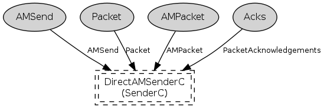

The virtualized active message send abstraction. Each instantiation of AMSenderC has its own queue of depth one. Therefore, it does not have to contend with other AMSenderC instantiations for queue space. The underlying implementation schedules the packets in these queues using some form of fair-share queueing.
